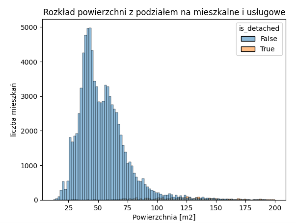
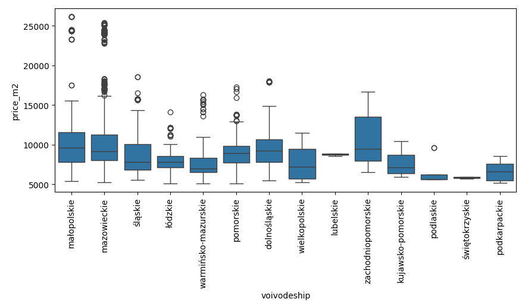
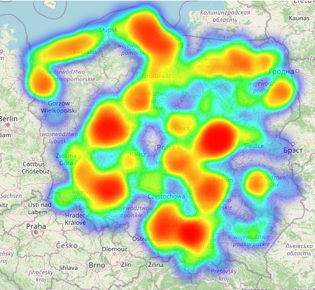
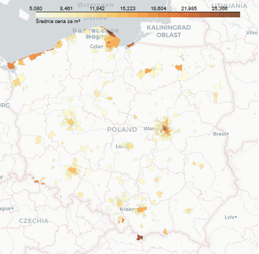
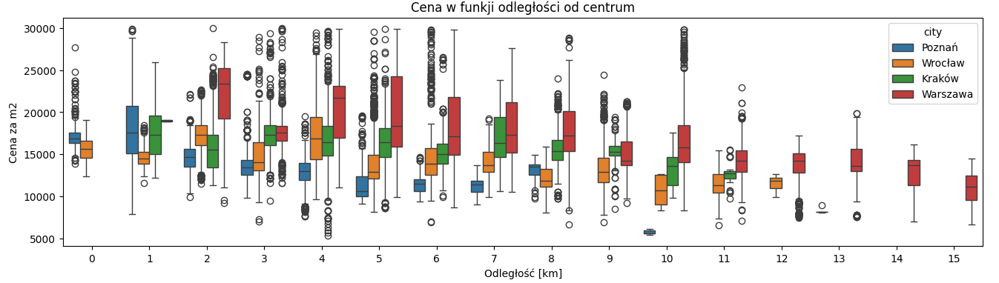
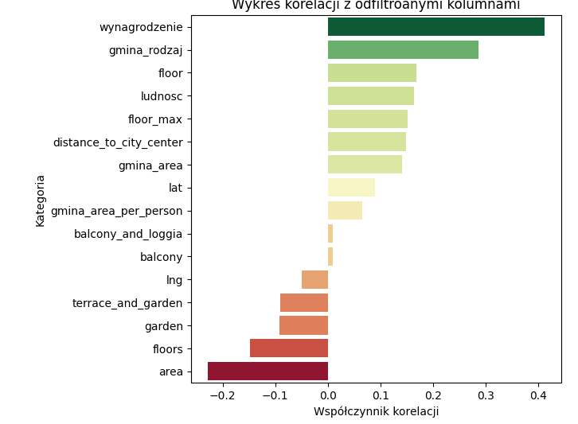
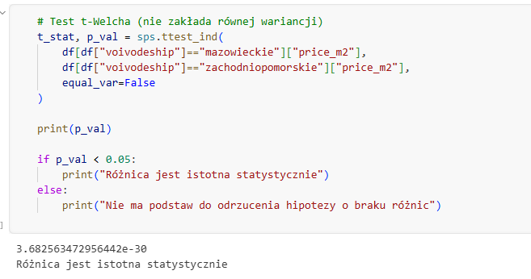

Case study od Dane i Analizy. Analizuje ceny mieszkań w Polsce. Zaczyna się od wczytania, oczyszczenia i wstępnej analizy danych - tu pozbywam się mieszkań zagranicznych i w tym przypadku niepełnych danych. Sprawdzam outliery i przygotowuję przydatne metryki (np. cena/m2). Krok drugi to wizualizacja danych na wykresach. Szukamy różnych zależności, np. ceny w zależności od piętra, liczby pięter w budynku czy lokalizacji - województwa. Po wstępnej analizie przygotowujemy model uczenia maszynowego do wyceny nieruchomości na podstawie zadanych parametrów.







